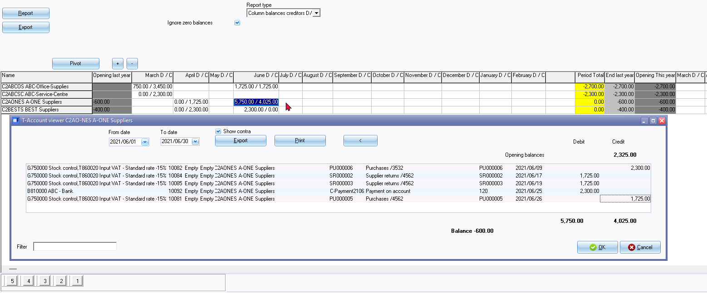
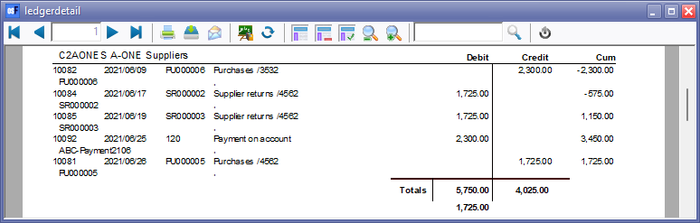
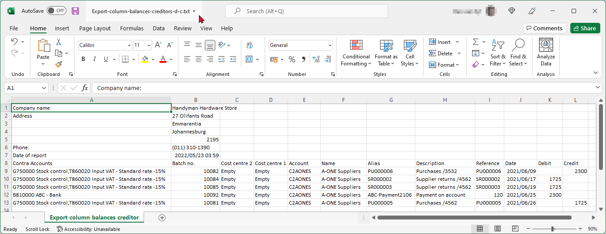

Column balances creditors - Debit / Credit
The Column balances creditor D/C report type list the debit and credit balances of the transactions totals for the for the individual creditor (supplier / vendor) accounts for each period.
You may select to list all creditor (supplier / vendor) accounts, or only those accounts with balances.
This report type cannot be printed but can be exported to a spreadsheet (e.g. OpenOfficeCalc / LibreOffice Calc or Microsoft Excel, etc.).
You may generate the transactions in a spreadsheet format in the Column balances creditors or the Column balances creditor D/C report types on the Ledger analyser.
These transaction totals may be exported to an "Export.txt" file or "Export.csv" and opened in a spreadsheet.
|
|
To view the transactions for a specific creditor (supplier / vendor) account for a specific period, simply double-click on a period. The transactions will be displayed in the T-Account viewer to filter, print or export the transactions. |

|
|
In addition to the transaction reports, you may also view and filter transactions on the Transactions tab of a selected creditor (supplier / vendor) account. |
|
|
This spreadsheet only includes batch and document transactions which are posted. Unposted batches and documents will be NOT be included in this spreadsheet. To view a list of unposted batches and documents, which is not updated to the ledger, go to Input → Checking unposted items (Default ribbon). |

Example : Column balances creditors - D / C

|
|
Buttons 5, 4, 3, 2 and 1 at the bottom of the report - is shortcut keys to the last accessed T-Account viewer options or Pivot options. These shortcuts will be cleared when you close active forms, or when you open the Set of Books. |
The periods is as follows:
- Opening Balance Last Year - Period -1
- Periods - This is last year periods - usually 1 to 12 (depending on the number of periods and descriptions specified and entered in Reporting dates on the Setup ribbon).
- Period Total - The total of the period totals for last year.
- End Last Year - Opening Balance Last Year total and the Period Total.
- Opening This Year - Period 0 - This should be the same as the End Last Year totals.
- Periods - This is the current year (this year) periods - usually 14 to 25 (depending on the number of periods and descriptions specified and entered in Reporting dates on the Setup ribbon).
- Period Total - The total of the period totals for this year.
- End this year - Opening Balance This Year total and the Period Total (This Year).
View transactions in T-Account viewer
|
|
You may double-click on a specific period of an account to list and view the transaction details in the T-Account viewer. You may be print the transactions. |
Print transactions in T-Account viewer

Export transactions in T-Account viewer

|
You may double-click on an account and/or in a specific period to list and view the transaction details in the T-Account viewer. You may be print the transactions. You may also click on the Export button of the T-Account viewer to export the transactions to a spreadsheet. You may select to save the export file as Text files (*.txt) (default file type); or as CSV files (*.csv) (Comma Separated Values) file type. This will automatically open (launch) the exported file in the program associated with the selected file type:
|